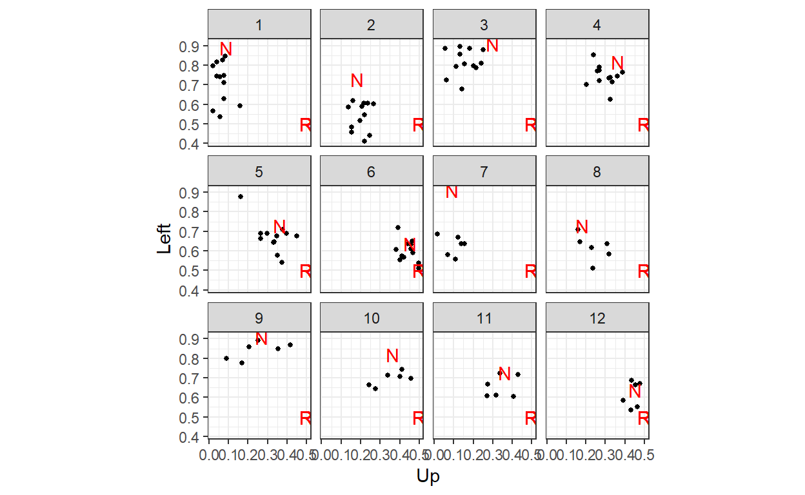
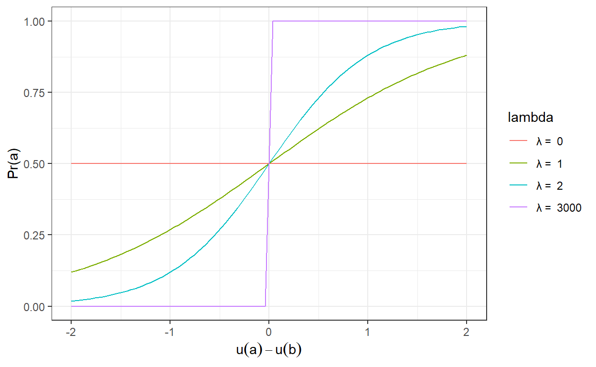
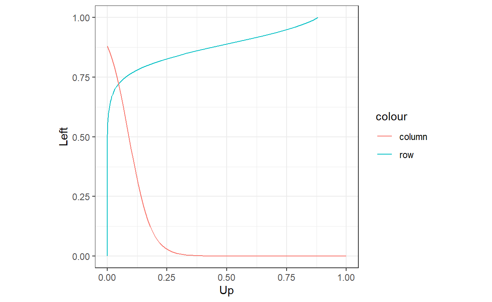
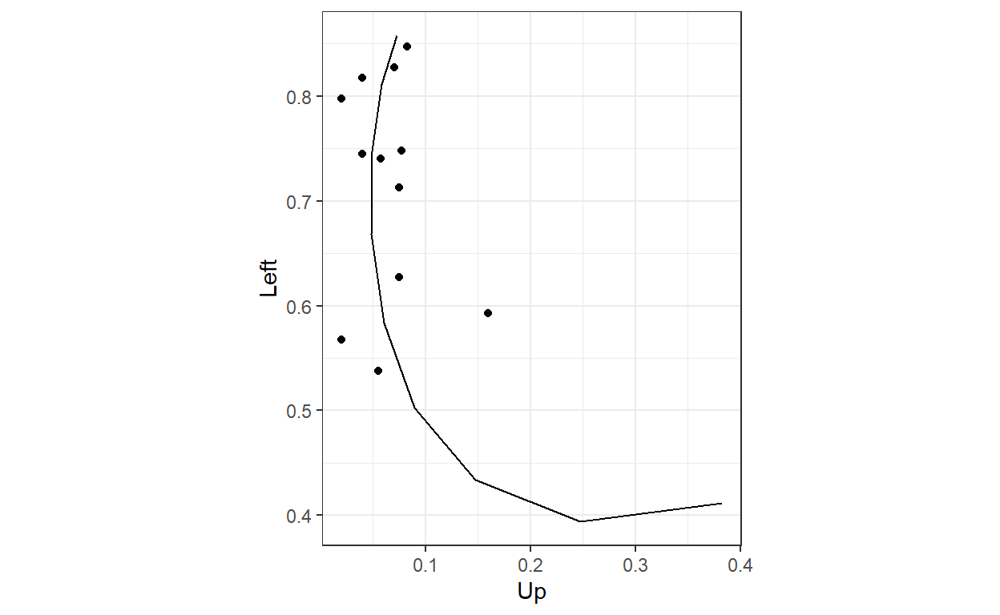
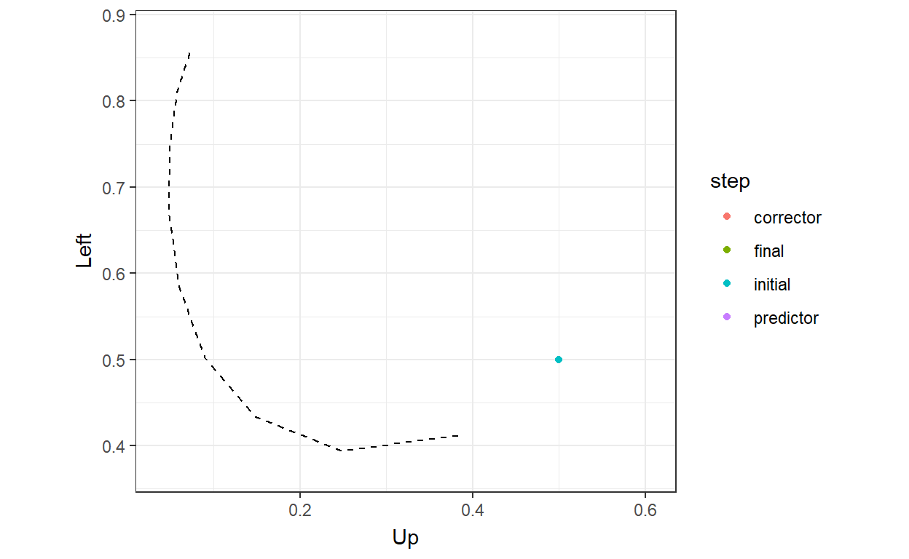
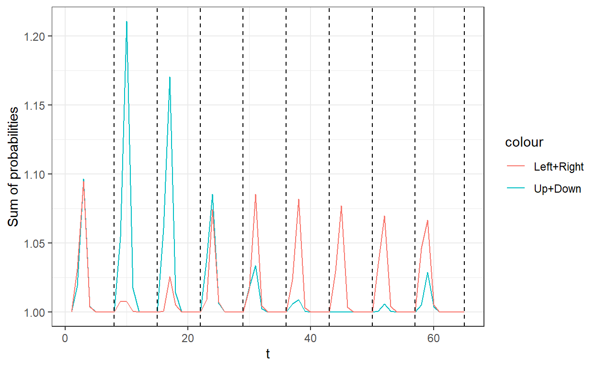

Implementing a predictor-corrector algorithm in R
Ted Turocy and I recently wrote a working paper on the ins and outs of computing and estimating Quantal Response Equilibrium (QRE). One of the issues we discuss in this paper is how computing QRE is computationally difficult, but that there are some things we can do to make the problem easier for our computer to solve. This post will walk you through a predictor-corrector algorithm we discuss in the paper to compute logit QRE (LQRE).
Consider, as an example the following plot of data from Selten and Chmura’s (2008) experiment1, which has participants play one of twelve generalized matching pennies games. Each dot shows the average play for a group of eight for the last 100 (of 200) rounds of the experiment. In red, I have labeled the unique mixed strategy Nash equilibrium of the game with an “N”. “R” marks the “centroid”, which corresponds to uniform randomization.

Here we can see that while the data seem to match Nash equilibrium much better than uniform randomization (good), there still seems to be a lot of behavior that is not well organized by Nash equilibrium. Quantal Response equilibrium is a generalization of Nash equilibrium, and so the hope is that QRE will organize the data better than does Nash equilibrium.
QRE is an extension of Nash equilibrium. Specifically, QRE replaces the best response with a probabilistic best response. That is, instead of players responding perfectly to equilibrium mixed strategies, they do so with some noise. As with Nash equilibrium, players have correct beliefs about the strategies of their opponents.
So what does a probabilistic best response look like? The usual assumption made about this is that actions that yield greater utility are chosen with greater probability. For example, suppose that a player is has two actions to choose between, \(a\) and \(b\). A popular specification of probabilistic best response is the logit specification, which assumes that the probability of choosing action \(a\) is:
\[ \begin{aligned} \Pr(a\mid u(a),u(b))&=\frac{\exp(\lambda u(a))}{\exp(\lambda u(a))+\exp(\lambda u(b))}\\& =\frac{1}{1+\exp(-\lambda(u(a)-u(b)))} \end{aligned} \]
where \(u(a)\) is the utility from taking action \(a\), and \(u(b)\) is the utility of choosing action \(b\). \(\lambda>0\) is the choice precision parameter. Here is a plot of this function for several values of \(\lambda\):

Note that the probability of choosing \(a\) is increasing as \(a\) yields more utility than \(b\). Also, as \(\lambda\) increases, the function becomes more sensitive to changes in payoffs. Taken to its limit, as \(\lambda\to\infty\), this function in fact becomes the best response function (approximated in the figure by the \(\lambda=3000\) curve). At the other end of \(\lambda\)’s range, \(\lambda=0\), the probabilistic best response function becomes flat, meaning that the player will randomize uniformly between actions \(a\) and \(b\).
But why are we doing this? Firstly, probabilistic best response is behaviorally plausible, or at least more plausible than best response. Our participants are human after all, and so assuming that they are going to perfectly best respond to payoffs and their opponents’ strategies is less plausible than assuming a probabilistic response. Therefore the predictions of QRE might (and in fact often do) deviate from Nash equilibrium in the direction that we see them do in data from experiments.
Secondly, the probabilistic best response assumption enables us to use likelihood-based estimation techniques like maximum likelihood and Bayesian estimation. Specifically, in Nash equilibrium, players will never choose an action that is not in their best response correspondence. Therefore if our human participants make just one decision that goes against this prediction, the likelihood function of our data will be zero everywhere, and we will not be able to estimate our model. Furthermore, and probably more alarmingly, best response participants will never choose a strictly dominated action, and so we should worry about the zero likelihood problem here too.
Finally, another interpretation of the probabilistic best response function is that there is a component of utility that is known to the participant, but not observed by us, the econometrician. That is, we can motivate probabilistic best response by assuming that players’ actual utility difference is:
\[ u(a)-u(b)+\epsilon \]
and that they best respond based on this quantity. Probabilistic best response therefore allows us to acknowledge that we may not have written down the utility function correctly.
Just like Nash equilibrium is when every player’s strategy is a best response to all other players’ strategies, in QRE every player’s strategy is a probabilistic best response to all other players’ strategies. Formally, if we let \(p\) be the stacked vector of players’ mixed strategies, then using the logit specification, (logit) QRE is a solution to:
\[ p_{i,a}=\frac{\exp(\lambda u_{i,a}(p))}{\sum_{b\in A_i}\exp(\lambda u_{i,b}(p))}\quad \text{for all } i\in N,\ a\in A_i \quad (\star) \]
So equilibrium is a fixed point in the above system of equations. The hard thing about computing QRE is the the mixed strategy profile \(p\) appears both on the left- and the right-hand side of this equation, so we generally can’t find an analytic solution to this.
For Game 1 of the Selten & Chmura (2008) experiment:
| L | R | |
|---|---|---|
| U | 10, 8 | 0, 18 |
| D | 9, 9 | 8, 8 |
this is how we would graphically find QRE for a specific value of \(\lambda\):
urow<-rbind(c(10,0),c(9,8))
ucol<-rbind(c(8,9),c(18,8))
lambda<-2
d<-expand.grid(p = seq(0,1,length=101),player = c("row","column")) |>
rowwise() |>
mutate(
PBR = ifelse(player=="row",
1/(1+exp(-lambda*(c(1,-1)%*%urow%*%c(p,1-p))))
,
1/(1+exp(-lambda*(c(1,-1)%*%ucol%*%c(p,1-p))))
)
) |>
ungroup()
(
ggplot()
+geom_path(data = d |> filter(player=="row"),
aes(x=PBR,y=p,color="row"))
+geom_path(data = d |> filter(player=="column"),
aes(x=p,y=PBR,color="column"))
+coord_fixed()
+theme_bw()
+xlab("Up")+ylab("Left")
)
So the QRE is the intersection of the probabilistic responses, just like Nash equilibrium is the intersection of best responses. While this is a great way to visualize QRE for \(2\times2\) games, it is not such a good way of solving for QRE. In practice, we will be better off using numerical continuation methods to solve QRE. Specifically, we will first define a system of equations that characterizes QRE. We will then use a predictor-corrector algorithm to solve the system.
First, we will set up a system of equations describing LQRE. These will include two kinds of constraints:
Furthermore, because the problem can be unstable if we attempt to solve it in probability levels, we will solve it in log probabilities. This has the added bonus of taking care of the other constraint on probabilities: that they must be greater than zero.
To begin with, let’s start with the equilibrium constraints. If we take the log of both sides of \((\star)\), we get:
\[ \begin{aligned} \log p_{i,a}&=\lambda u_{i,a}(p)-\log\left(\sum_{b\in A_i}\exp\left(\lambda u_{i,b}(p)\right)\right) \end{aligned} \]
We can then subtract the expression for \(\log p_{i,0}\), a baseline action (log) probability for player \(i\), from both sides of the equation to get:
\[ \begin{aligned} \log p_{i,a}-\log p_{i,0}&=\lambda u_{i,a}(p)-\lambda u_{i,0}(p)-\log\left(\sum_{b\in A_i}\exp\left(\lambda u_{i,b}(p)\right)\right)+\log\left(\sum_{b\in A_i}\exp\left(\lambda u_{i,b}(p)\right)\right)\\ &=\lambda\left[u_{i,a}(p)-u_{i,0}(p)\right] \end{aligned} \]
That is, we can express a difference in log probabilities as a difference in utilities, amplified by \(\lambda\).
Letting \(l_{i,a}=\log p_{i,a}\), we can therefore write the equilibrium constraints as:
\[ \begin{aligned} H_{i,a}(l,\lambda)&=l_{i,a}-l_{i,0}-\lambda\left[u_{i,a}(\exp(l))-u_{i,0}(\exp(l))\right]\\ \end{aligned} \]
That is, for \((l,\lambda)\) to be an LQRE, it must be that \(H_{i,a}(l,\lambda)=0\) for all \(i\) and \(a\).
Finally, we need one constraint per player to ensure that their mixed strategy probabilities add up to one:
\[ \begin{aligned} H_i(l,\lambda)&=1-\sum_{a=1}^{|A_i|}\exp(l_{i,a}) \end{aligned} \]
For Game 1 of Selten & Chmura (2008), shown in the table above, this means we would have:
\[ \begin{aligned} H(l,\lambda)&=\begin{pmatrix} l_U-l_D-\lambda\left[\exp(l_L)-8\exp(l_R)\right]\\ l_L-l_R-\lambda\left[-10\exp(l_U)+\exp(l_D)\right]\\ 1-\exp(l_U)-\exp(l_D)\\ 1-\exp(l_L)-\exp(l_R) \end{pmatrix} \end{aligned} \]
Sometimes in the later working, I find it easier to write this in this form:
\[ \begin{aligned} H(l,\lambda)&=Al+B(\lambda)\exp(l)+c\\ \text{where: } A&=\begin{bmatrix} 1 & -1 & 0 & 0\\ 0 & 0 & 1& -1\\ 0 & 0& 0& 0\\ 0 & 0 & 0& 0 \end{bmatrix}\\ B(\lambda)&=\begin{bmatrix}0& 0& -\lambda & 8\lambda\\ 10\lambda &-\lambda &0&0\\ -1 & -1& 0 & 0\\ 0 & 0 & -1 & -1 \end{bmatrix}\\ c&=\begin{pmatrix}0 \\ 0 \\ 1\\1\end{pmatrix} \end{aligned} \]
which cuts down on some of the notational burden when we have to take derivatives of \(H\). For two-player games, these matrices are usually very simple (but not necessarily small), and should contain a lot of zeros and ones.
The goal for computing QRE is to trace out the solutions to \(H(l,\lambda)=0\), starting at a known solution \((l^0,\lambda^0)\). Fortunately for us, we know that uniform randomization with \(\lambda = 0\), i.e. \((\bar l,0)\), is a QRE. So this is a good first place to start.2 The predictor-corrector algorithm makes two kinds of step. These are:
The predictor step uses a linear approximation of \(H\) to determine how the equilibrium log-probabilities \(l\) change due to a change in \(\lambda\). That is, the total derivative of \(H\) can be written as:
\[ \begin{aligned} 0&=\frac{\partial H(l,\lambda)}{\partial l^\top}\mathrm dl+\frac{\partial H(l,\lambda)}{\partial \lambda}\mathrm d\lambda \end{aligned} \]
Therefore if we know that \((l^t,\lambda^t)\) is a QRE, then going along the path in the direction \(\Delta\lambda^t\) tells us that \((l^t+\Delta l^t,\lambda^t+\Delta\lambda^t)\) will be approximately a QRE, where:
\[ \Delta l^t =-\left[\frac{\partial H(l^t,\lambda^t)}{\partial l^\top}\right]^{-1}\frac{\partial H(l^t,\lambda^t)}{\partial \lambda}\Delta\lambda^t \]
\(l^t+\Delta l^t\) then becomes our initial guess for the (log) mixed strategy profile at \(\lambda^{t+1}=\lambda^t+\Delta\lambda^t\)
But the above is only an approximation of QRE for \(\lambda^{t+1}\). This is because the system is nonlinear, and we have made a linear approximation. We therefore need to correct our guess for \(l^{t+1}\). This is for two reasons:
Fortunately, both of these conditions are captured in \(H(l,\lambda)\), and we can approximate this, just as a function of \(l\), as follows:
\[ \begin{aligned} H(l^{t+1},\lambda)-H(l^{t},\lambda)&\approx \frac{\partial H(l,\lambda)}{\partial \lambda^\top}(l^{t+1}-l^t) \end{aligned} \]
This is a linear approximation of \(H(l^{t},\lambda)\).
we want to find a solution to \(H(l^{t+1},\lambda)=0\), so:
\[ l^{t+1}=l^t-\left[\frac{\partial H(l,\lambda)}{\partial \lambda^\top}\right]^{-1}H(l^t,\lambda) \]
And so, as long as the corrector step has not flung us too far off course, we can iterate on this until we are sufficiently close to a zero for \(H(l^t,\lambda)\).
Let’s use Selten & Chmura’s (2008) Game 1 as an example again, and implement the predictor-corrector algorithm to trace out the LQRE. For this, we will need \(H\) and its first derivitives. Using the matrix representation:
\[ H(l,\lambda)=Al+B(\lambda)\exp(l)+c \]
these derivatives are:
\[ \begin{aligned} \frac{\partial H(l,\lambda)}{\partial l^\top} &=A+B(\lambda)\mathrm{diag}(\exp(l))\\ \frac{\partial H(l,\lambda)}{\partial \lambda}&=B_\lambda\exp(l) \end{aligned} \]
where \(\mathrm{diag}(x)\) takes a vector \(x\) and turns it into a diagonal matrix.
And here they are coded up:
A<-rbind(c(1,-1,0,0),
c(0,0,1,-1),
c(0,0,0,0),
c(0,0,0,0)
)
B<-function(lambda) {
rbind(c(0,0,-lambda,8*lambda),
c(10*lambda,-lambda,0,0),
c(-1,-1,0,0),
c(0,0,-1,-1)
)
}
B_lambda<-rbind(c(0,0,-1,8),
c(10,-1,0,0),
c(0,0,0,0),
c(0,0,0,0)
)
c<-c(0,0,1,1)
H<-function(l,lambda) {
A%*%l+B(lambda)%*%exp(l)+c
}
Hl<-function(l,lambda) {
A+B(lambda)%*%diag(exp(l) |> as.vector())
}
Hlambda<-function(l,lambda) {
B_lambda%*%exp(l)
}Now let’s use these to trace out the QRE for the game. Here I am not exactly implementing my most efficient code to do this. Specifically, I am storing all of the information about intermediate steps so we can look at them later. Also, I am not optimizing the algorithm for step length. Instead, I am just specifying a grid for \(\lambda\). I will get to fixing this in another post.
# grid to compute QRE over
LAMBDA<-1/(1-seq(0.1,0.9,length=9))-1
# initial conditions
l<-rep(log(0.5),4)
lambda<-0
# Tolerance for the corrector step
tol<-1e-6
QRE<-tibble(
U = l[1],
D = l[2],
L = l[3],
R = l[4],
lambda = lambda,
step="initial",
err=0
)
for (ll in LAMBDA) {
# predictor step
dl <- solve(Hl(l,lambda),Hlambda(l,lambda))*(ll-lambda)
l<-l+dl
lambda<-ll
QRE<-rbind(
QRE,
tibble(
U = l[1],
D = l[2],
L = l[3],
R = l[4],
lambda = lambda,
step = "predictor",
err = max(abs(H(l,lambda)))
)
)
# corrector steps
err<-Inf
while (err>tol) {
Hfun<-H(l,lambda)
err<-max(abs(Hfun))
l<-l-solve(Hl(l,lambda),Hfun)
QRE<-rbind(
QRE,
tibble(
U = l[1],
D = l[2],
L = l[3],
R = l[4],
lambda = lambda,
step = "corrector",
err = max(abs(H(l,lambda)))
)
)
}
QRE<-rbind(
QRE,
tibble(
U = l[1],
D = l[2],
L = l[3],
R = l[4],
lambda = lambda,
step = "final",
err = max(abs(H(l,lambda)))
)
)
}Let’s have a look at what we’ve got, and I will overlay the data from this game as well:
QRE<-QRE |>
mutate(Up = exp(U),Down = exp(D),Left = exp(L),Right = exp(R),
t = 1:n())
(
ggplot(QRE |> filter(step=="final"),aes(x=Up,y=Left))
+geom_point(data=SC2008_100 |> filter(game==1),aes(x=Up,y=Left))
+geom_path()
+theme_bw()
+coord_fixed()
)
Nice! The data are actually matching the QRE arc really well!
Let’s have a look at what the predictor-corrector algorithm is doing:
(
ggplot()
+geom_point(data=QRE,aes(x=Up,y=Left,color=step))
+geom_path(data=QRE |> filter(step=="final") |> select(Up,Left),aes(x=Up,y=Left),linetype="dashed")
+transition_time(t)
+theme_bw()
+coord_fixed()
)
So here we can see that, at least in the probability space, the algorithm is all over the place, but finds the QRE arc in the end. But this is a 5-dimensional problem (four probabilities plus \(\lambda\)), which makes it hard to really see everything that’s going on a 2-dimensional page. Perhaps the best way I could come up with to see this was to show every step of the algorithm on one axis, and how the probabilities add up on the other:
(
ggplot(QRE,aes(x=t))
+geom_path(aes(y=Up+Down,color="Up+Down"))
+geom_path(aes(y=Left+Right,color = "Left+Right"))
+theme_bw()
+geom_vline(data=QRE|> filter(step=="final"),aes(xintercept = t),linetype="dashed")
+ylab("Sum of probabilities")
)
Where the vertical lines show where the while loop in the corrector algorithm stopped, which is the final value for that \(\lambda\). It looks like the predictor step is systematically predicting “probabilities” that add up to something greater than one, and this is (part of) what the corrector steps are correcting for.
Selten, Reinhard, and Thorsten Chmura. “Stationary concepts for experimental 2x2-games.” American Economic Review 98, no. 3 (2008): 938-966.↩︎
Alternatively, we could start at (approximatly) a Nash equilibrium \((l^\text{Nash},\lambda\to\infty)\) and work our way “backwards”. This adds some additional complexity because our computer won’t be able to handle infinity, but once we are away from Nash equilibrium and heading in the right direction, the corrector step should be able to find the solution fairly easily.↩︎